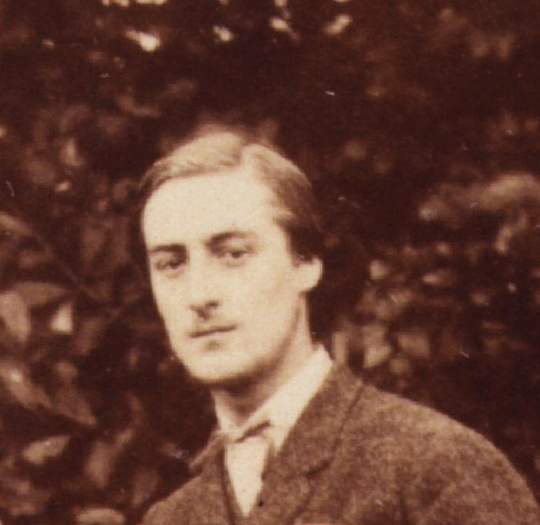

Tuesday, May the 29th, 2012
back to: title, date or indexes

There is a piece in The Public Domain Review about Gerard Manley Hopkins' reportage on the remarkable “Krakatoa sunsets” of 1883.
according to my observation, the ground of the sky in the east was green or else tawny, and the crimson only in the clouds. A great sheet of heavy dark cloud, with a reefed or puckered make, drew off the west in the course of the pageant: the edge of this and the smaller pellets of cloud that filed across the bright field of the sundown caught a livid green.